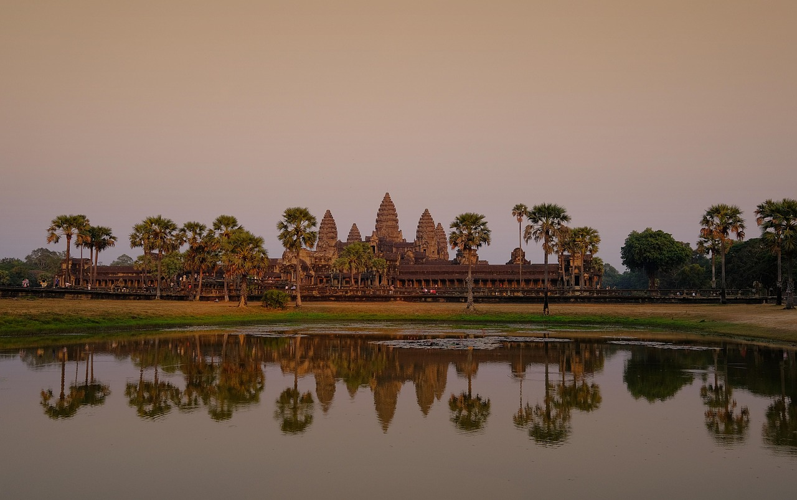
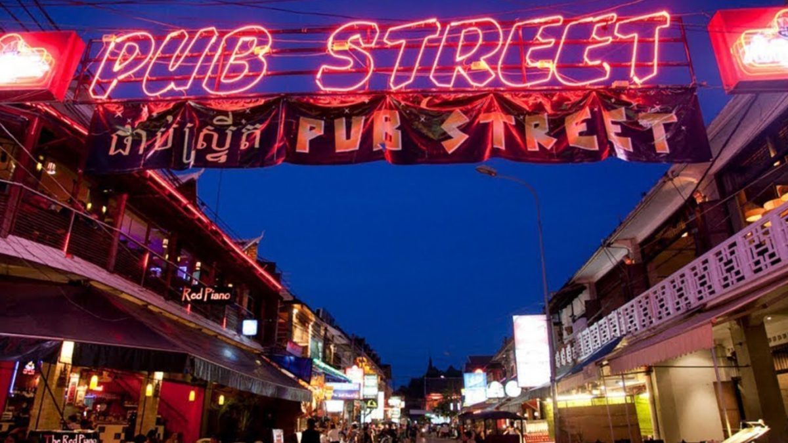

A Photo Tour of
CAMBODIA
"KIMDOM OF WONDER"
SIEM REAP
Siem Reap is a city in Cambodia known for Anglo Wat the world’s largest temple complex. It is a major tourist destination that offers everything from ancient ruins to culture shows; night markets; and even floating villages. The name "Siem Reap" means "Defeat of Siam" and has roots in historical significance. Angkor Wat (which also appears on Cambodia's national flag), was built during the reign of the Khmer Empire. With its rich history, colorful culture, and modernity, Siem Reap has its unique experience.
Pub Street in Siem Reap, officially known as Street 8, is the city's vibrant nightlife hub. Located in the heart of downtown, this pedestrian-friendly area comes alive after sunset with neon lights, music, and bustling crowds.
